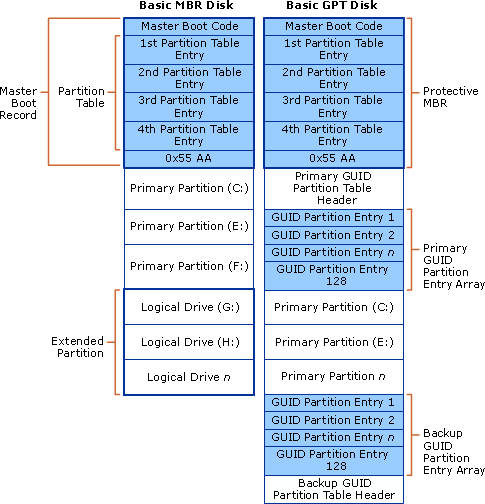
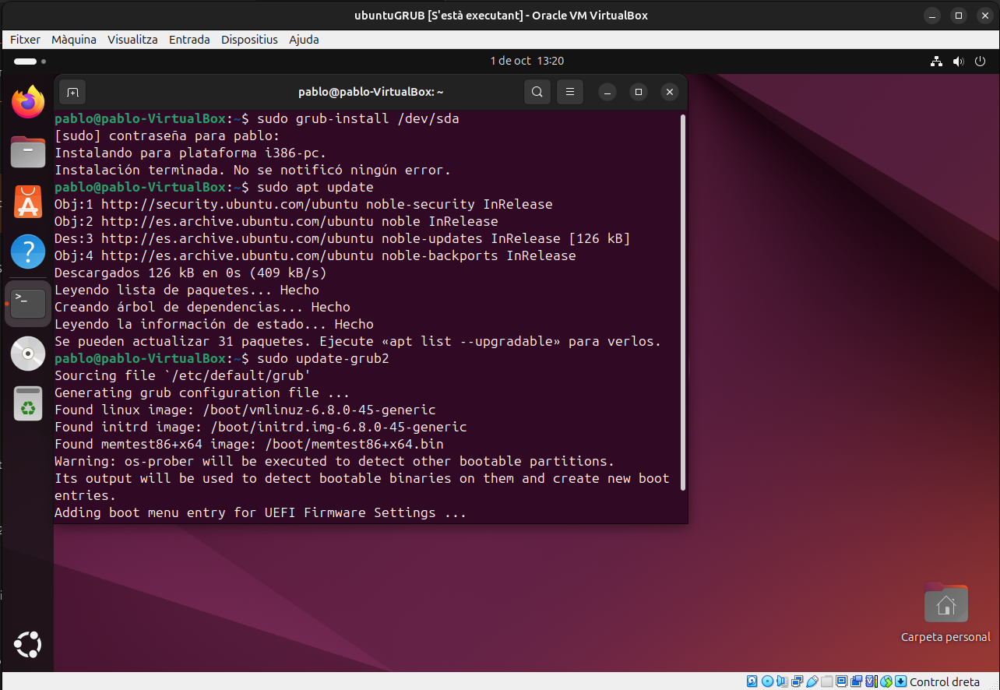

Instal·lació d'Ubuntu 24.04 LTS
Procés d'instal·lació
Començarem el procés d'intal·lació de la màquina virtual fican't-li un nom, el directori on volem que es guardi i la seva ISO corresponent.

Més endavant, configurarem el usuari principal amb el seu username i la seva contrasenya.


Configurar Xarxa NAT
A continuació crearem l'adaptador per crear una xarxa NAT a la nostra màquina virutal. LLavors, ens dirigirem a l'apartat Fitxer>Eines>NetworkManager o fent la combinació de tecles Ctrl+H per obrir el gestor de xarxes.
En suma, premem el botó "Crea" per crear un nou adaptador i el configurem amb la nostra xarxa 10.0.2.0/24


Procés de configuració
Començant el procés de configuració del sistema operatiu solament hem de configurar-ho amb les nostres preferencies i donar següent als passos.


Ara, ens cal configurar manualment les nostres particions i el sistema de gestió d'emmagatzemament del nostre sistema. Per això, elegim l'opció de "Manual installation" i prenem el botó de següent.
 Dintre d'aquesta pantalla el que farem será amb l'espai lliure que ens deixa configurar prenem el signe de "+". Afegim 25GB la carpeta /home, 10GB a la carpeta Swap, (la resta de gigabytes a la /).
Dintre d'aquesta pantalla el que farem será amb l'espai lliure que ens deixa configurar prenem el signe de "+". Afegim 25GB la carpeta /home, 10GB a la carpeta Swap, (la resta de gigabytes a la /).

Creem un compte per al nostre usuari principal amb una contraseya que sigui fácil de recordar.


 Finalment, solament en fa falta reiniciar la màquina virtual i ja tindrem el nostres sistema operatiu configurat i funcional.
Finalment, solament en fa falta reiniciar la màquina virtual i ja tindrem el nostres sistema operatiu configurat i funcional.
Configuració de la xarxa (interfície gràfica)
Si volem aplicar la configuració de l'adaptador amb Xarxa NAT hem de dirigirnos a paràmetres>Newtwork i configurar l'adaptador manualment. Ficarem com IP: 10.0.2.X amb una màscara 255.255.255.0 i una porta d'enllaç 10.0.2.1. Aplicarem els canvis.
 Comprovem si la IP s'ha canviat.
Comprovem si la IP s'ha canviat.

Fem un ping per connectivitat.

Configuració de la xarxa (amb comandes)
Ara, si volem fer el mateix procediment que abans amb la terminal ens d'utilitzar la comanda sudo nano /etc/netplan/01-network-manager-all.yaml.
D'aquesta manera, copiarem tota la configuració que hi ha a l'imatge, guardarem amb Ctrl+O i sortirem amb Ctrl+X.
 Comprovem si la IP s'ha canviat.
Comprovem si la IP s'ha canviat.
Fem un ping per connectivitat.
Punts de restauració

Timeshift


GRUB
MBR (Master Boot Record)
MBR és un format de partició més antic, creat als anys 80, utilitzant en molts sistemes operatius. És compatible amb gairebé en tots. Però, té algunes limitacions importants.
- Pot gestionar discs de fins a 2 TB de mida màxima.
- Només permet crear fins a 4 particions primàries. Si necessites més, has de convertir una de les particions en "partició estesa" i, dins d'ella, crear particions lògiques.
- L'MBR conté un petit codi de "boot" (arrencada), que és el primer lloc on el sistema operatiu busca per iniciar-se quan engegues l'ordinador.
Limitacions
- No suporta discs més grans de 2 TB.
- Menys flexible pel que fa a la quantitat de particions.
GPT (GUID Partition Table)
GPT és el nou format de particions el qual es va dissenyar per superar les limitacions del MBR. És part de l'especificació UEFI (Unified Extensible Firmware Interface) i ofereix moltes millores tècniques.
- Suporta discs de fins a 9,4 ZB.
- Pot gestionar fins a 128 particions en molts sistemes (i més en d'altres), sense necessitat de particions esteses o lògiques.
- Cada partició en GPT té un identificador únic global (GUID), el que fa que sigui molt més robust a l'hora d'identificar particions.
- Té còpies de seguretat de la taula de particions, de manera que si una part del disc es corromp, és més fàcil recuperar la informació.
Quan instal·les Ubuntu o qualsevol altre sistema operatiu basat en Linux, pots triar entre utilitzar MBR o GPT per al disc, depenent de les teves necessitats. També perquè hi han distribucions que actualment no soporten GPT encara.

Si tens un ordinador modern amb UEFI, la millor opció és utilitzar GPT, perquè aprofita les capacitats modernes del maquinari i permet una millor gestió dels discs i particions.
El·liminar la carpeta GRUB
Per començar la pràctica hem de descarregar la ISO del Boot Repair Disk.
 Borrem tots el arxius de la carpeta
Borrem tots el arxius de la carpeta /boot/grub.
 Com podem veure, no estan els arxius necessaris de la carpeta d'arranc del sistema.
Com podem veure, no estan els arxius necessaris de la carpeta d'arranc del sistema.

Ara, el que volem fer es iniciar la màquina virutal del nos super grub2 per poder restaurar el sistema d'arranc.
Seguim tots els passos que es mostren en les captures.


Finalment, reiniciem la màquina i vorem que ja ens arranca el Ubuntu. Com pas final, apliquem la comanda sudo grub-install /dev/sda i un sudo update-grub2.

Boot Repair Disk

Al moment de ja tindre instal·lat el Boot Repair Disk solament ens caldrà fer la prova de borrar la nostra carpeta boot/grub provar a iniciar la ISO i veure si la ferramente ha arreglat el directori d'arranc.


Com podem apreciar, tots els problemes d'arranc s'han arreglat i hem pogut iniciar el sistema operatiu correctament.

Gestió de paquets
Instal·lació amb Synaptic

Instal·lació amb apt-get o apt
Desinstal·lació amb apt
sudo apt remove nom_del_paquet (vim)
sudo apt remove vim
sudo apt purge nombre_del_paquete
sudo apt autoremove
Instalació d'Aplicacions amb repositoris
sudo apt update.sudo aptitude install "nom_del_paquet
sudo apt install apt-transport-https ca-certificates curl software-properties-common
curl -fsSL https://download.docker.com/linux/ubuntu/gpg | sudo gpg --dearmor -o /usr/share/keyrings/docker-archive-keyring.gpg
echo "deb [arch=$(dpkg --print-architecture) signed-by=/usr/share/keyrings/docker-archive-keyring.gpg] https://download.docker.com/linux/ubuntu $(lsb_release -cs) stable" | sudo tee /etc/apt/sources.list.d/docker.list > /dev/null
sudo apt update
sudo apt install "nom_del_paquet" (sudo apt install docker-ce)


ESCRIURE LA LÍNIA 3 A LA RUTA: /etc/apt/source.list/
Desinstal·lar aplicacions amb repositoris
sudo apt remove "nom_del_paquet" (sudo apt remove docker-ce)
sudo apt purge docker-ce
sudo rm /etc/apt/sources.list.d/docker.list
sudo apt autoremove

Instal·lació amb dpkg


Desinstal·lació amb dpkg
Instal·lació amb aptitude

Desinstal·lació amb aptitude
Compilar a traves de codi font